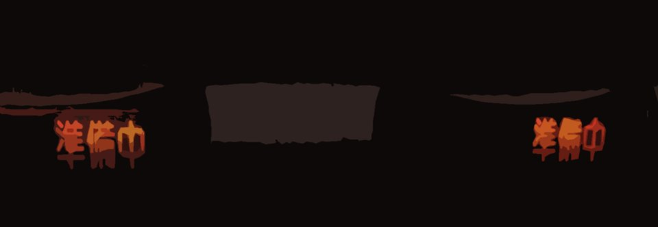
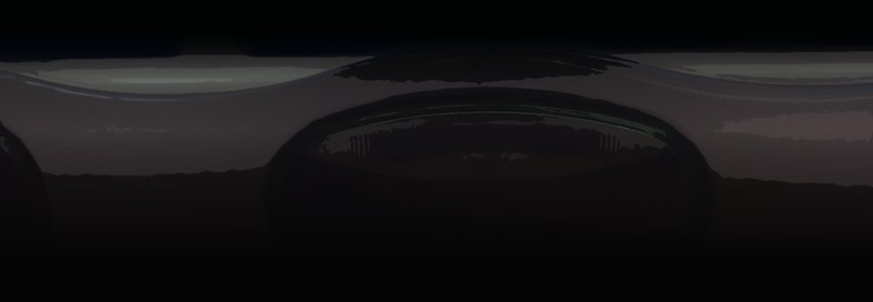
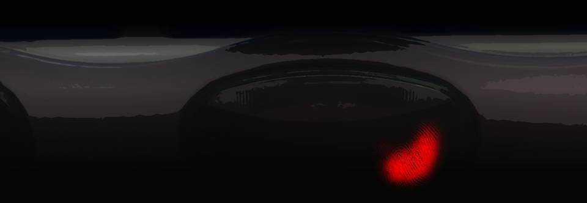
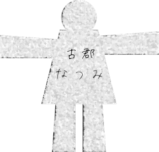

This scene is not unlocked yet in your progress
Motokizakura-sama 1

"At last, the second half. Quite a rich variety so far, but how will things go from here?"
The ones left were me, Chiga-nee, and Obasan.
Obaasan drew the doll in the middle.
The ones left were me, Chiga-nee, and Obasan.
Obaasan drew the doll in the middle.


Mifuyu Niimura
Obasan's turn.
Obasan's turn.


"Oh my, I'm next! Everyone's stories were so interesting, it's a little bit of pressure!"
Obasan's voice was as high-energy as always―
Obasan's voice was as high-energy as always―

or so I thought, but she looked around at everyone with a sharp, serious gaze.
"As Haruka said, we came back to Motoki-cho 10 years ago.
When we came back to Motoki-cho, my health got better too, and I worked as hard as I could, enough for Eiichiro-san's share as well.
A few years later, I was given a good opportunity, and I ended up founding a company.

―Motoki-cho has just about every facility you need right there, so not many people take the train out of town.
But back then... it would have been midsummer, about 5 years ago.
I had a trip planned out of town, so I decided to go by train.
But back then... it would have been midsummer, about 5 years ago.
I had a trip planned out of town, so I decided to go by train.

The meeting with the client was at 10 the next morning.
It was an overnight business trip.
Another matter had run late, so it was around 21:00 at night when I got to the station.
It was a late train, so there was hardly anyone at the station.
It was an overnight business trip.
Another matter had run late, so it was around 21:00 at night when I got to the station.
It was a late train, so there was hardly anyone at the station.
But the train seemed to be delayed, and when I asked the station staff why...
It seemed someone had gone onto the tracks at this platform.
But even though both the driver and the conductor had seen someone go onto the tracks, there was no one there.
Not hit by the train, and not having gotten out of its way either.
They said it would take a little time to find out what had happened to that person.
It seemed someone had gone onto the tracks at this platform.
But even though both the driver and the conductor had seen someone go onto the tracks, there was no one there.
Not hit by the train, and not having gotten out of its way either.
They said it would take a little time to find out what had happened to that person.
Actually, there was something on my mind.

Unusually for Motoki-cho, someone had been hit by a train at the station the night before.

A girl from Motoki High had been hit by the train, and her body was torn to pieces, I heard.
And I had heard that the girl's hands hadn't been found.
And now, right after that, the train was stopped for such an inexplicable reason, so the air didn't feel pleasant at all.
And now, right after that, the train was stopped for such an inexplicable reason, so the air didn't feel pleasant at all.
It was a midsummer night.
I remember it was hot even at night.
And Motoki Station doesn't have anything like an air-conditioned waiting room...
I remember it was hot even at night.
And Motoki Station doesn't have anything like an air-conditioned waiting room...

I went to buy something cold from the vending machine on the platform.
It happened when I put my money in and went to buy what I wanted.
It happened when I put my money in and went to buy what I wanted.


Suddenly the vending machine's lights went out, and every button lit up with 'Not Available.'
But my money didn't come back.
I thought about calling the station staff, but at some point, everyone had gone from the platform.
While I was thinking I'd lost a little money, I noticed something odd.
But my money didn't come back.
I thought about calling the station staff, but at some point, everyone had gone from the platform.
While I was thinking I'd lost a little money, I noticed something odd.

Looking closely, I saw that just one button didn't have the 'Not Available' light on.
Well, if I pressed it and something came out, that'd be a lucky break.
But... just as I went to press that button... I noticed.
Well, if I pressed it and something came out, that'd be a lucky break.
But... just as I went to press that button... I noticed.

There was a small red stain on that button.
Looking closely, I saw it was a bloodstain.
A bloodstain as if a single drop of blood had spattered there from a little way off.
And it still had a sheen... it wasn't completely dry.
Looking closely, I saw it was a bloodstain.
A bloodstain as if a single drop of blood had spattered there from a little way off.
And it still had a sheen... it wasn't completely dry.
The day before, a high-school girl had been hit by a train here.
If this bloodstain was from then...
But it was too fresh for that.
I hesitated to press the button.
That was when...
If this bloodstain was from then...
But it was too fresh for that.
I hesitated to press the button.
That was when...
The bloodstain slowly spread, and a pattern rose to the surface.
That pattern was, unmistakably... a human fingerprint.
Was someone invisible pressing the button?
My legs started to shake.
I wanted to cry out, but I was too scared to make a sound.
That pattern was, unmistakably... a human fingerprint.
Was someone invisible pressing the button?
My legs started to shake.
I wanted to cry out, but I was too scared to make a sound.
And then, suddenly, I heard the sound of a vending machine button being pressed.
But there was something strange about that sound too.
Like the buzzer when a train departs...
But there was something strange about that sound too.
Like the buzzer when a train departs...

And then, into the slot, something unidentifiable came falling,
splat,
splat.
Two of them, for some reason.
As if lumps of meat had dropped down...
Two of them, for some reason.
As if lumps of meat had dropped down...
I didn't have the courage to take that unidentifiable thing out.

I stood frozen there for a while, but finally my feet began to move, and just as I tried to turn them toward where the station staff were...

I felt someone's breath from behind me.
A smell that reeked of blood and made me want to throw up.
A smell that reeked of blood and made me want to throw up.
My hands, take them out of there
"Thank you for waiting. The delayed train will depart shortly."
Suddenly, that announcement rang out.
The woman who had been in front of me had vanished like smoke.
Suddenly, that announcement rang out.
The woman who had been in front of me had vanished like smoke.
"I heard afterwards that the hands of the high-school girl who jumped in front of the train were found right at that time.
Maybe the one delaying the train back then was searching for her lost hands, and even when she found them, she couldn't pick them up because she had no hands, so she wanted someone to find them for her.
That's the end of my story."
A classic scary story.
Scary, but maybe it lacked the impact of Goto's.
Scary, but maybe it lacked the impact of Goto's.

"Mom... so what was the drink that came out in the end...?"
"Who knows? I was too scared to check, but the hands were gone, so it probably wasn't the high-school girl who pressed the button."
"Who knows? I was too scared to check, but the hands were gone, so it probably wasn't the high-school girl who pressed the button."
"Huh? What do you mean by that..."
"Don't tell me, Haruka, you don't know it? The story of 'Motokizakura-sama' that's been handed down in Motoki-cho since long ago..." [TN: Motokizakura: 'Motoki cherry tree'; -sama is an honorific.]
"Don't tell me, Haruka, you don't know it? The story of 'Motokizakura-sama' that's been handed down in Motoki-cho since long ago..." [TN: Motokizakura: 'Motoki cherry tree'; -sama is an honorific.]
"Ah, wait, Obasan! I was going to tell that one!"
"Oh, that's a shaaame! Then from here on, I'll leave it to Natsumi-chan!"
"Oh, that's a shaaame! Then from here on, I'll leave it to Natsumi-chan!"

"Oho... and by coincidence, the next doll seems to be Natsumi-chan's."
Obaasan had drawn the paper doll before I knew it.
Natsumi Kogori
My turn at last.
Actually, mine was the only one written horizontally...
Obaasan had drawn the paper doll before I knew it.
Natsumi Kogori
My turn at last.
Actually, mine was the only one written horizontally...
Read ✓ Next: Motokizakura-sama 2 →